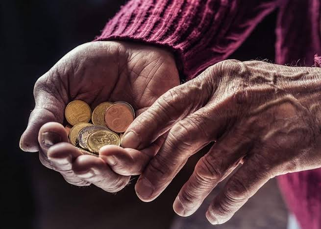
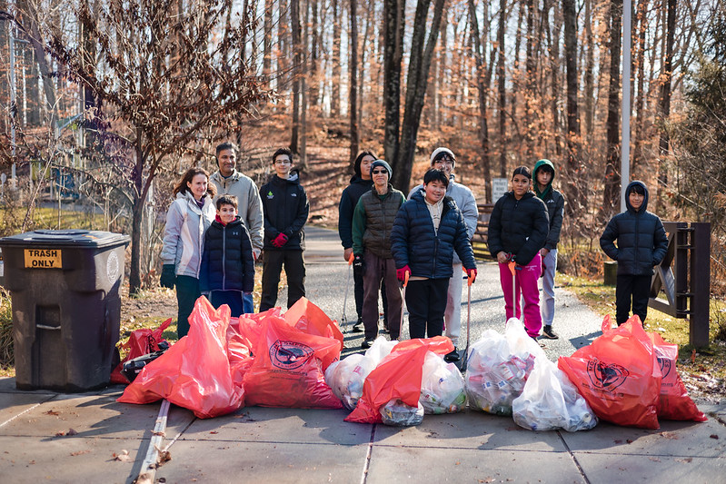

ABOUT US
Themba Givers is a non-profit organisation that provides assistance to people in local communities.
Who We Are
Themba Givers provides food parcels to people who are experiencing difficult circumstances, including elderly and pension earners. We also organise weekly feeding schemes for local communities.
Depending on donations received, Themba Givers also organises clothing drives to provide clothing to children and families who need assistance.


Helping Our Community
Members of the community can also volunteer their time. Volunteers can help dish up food, clean community parks, hand out food parcels and assist during community events.
Elderly people who require assistance with their pension can use our enquiries page to request further information about finding professional assistance.
Our Mission
To provide support and basic necessities to people who need help in our communities.
Our Vision
To create stronger communities where people support and care for one another.